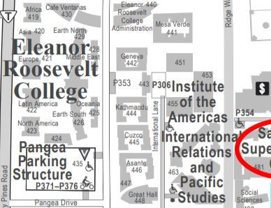
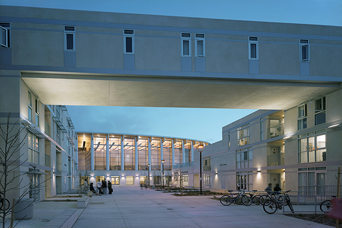
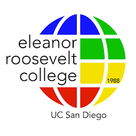

Roosevelt
Scholarship, Leadership, and Service
Roosevelt’s Educational Philosophy is based on the belief that to be
educated in our world today means to understand one’s own history and cultural
heritage and the history and thought of other major cultural traditions as well.
All ERC undergraduates will include in their academic programs a series of general
requirements designed to provide a broad, multi-cultural perspective.
Enrollment(2020): 5,077 - 15.9% of total enrollment


There are a total of 7 general education requirements for Roosevelt College:
Making of the Modern World, Quantitative & Formal Skills, Natural Sciences, Language, Fine
Arts, Regional Specialization, and Upper-Division Writing Requirement.
This totals to 14 general education requirements courses.
Making of the Modern World
A five-course sequence in MMW: MMW 11,12,13,14,15. They are taught
during the academic year and summer.
Visit here for more infomration on MMW course overview.
Quantitative & Formal Skills
- MMW 11: Human Origins and Ancient Foundations (4 units) Fall
- MMW 12: Classical and Medieval Traditions to 1200Ce (6 units) Winter
- MMW 13: New Ideas and Cultural Encounters 13th-18th Century (6 units) Spring
- MMW 14: Revolution, Empire, Industry 18th-20th Century (4 units) Fall, Winter, Summer, & Global Seminars
- MMW 15: Twentieth Century and Beyond (4 units) Spring, SUmmer & Global Seminars
Visit here for more infomration on MMW course overview.
Must take 2 courses from the list below depending on academic focus.
Courses intended for math, science/engineering majors and Pre-Medical Students
Natural Science Requirement
Courses intended for math, science/engineering majors and Pre-Medical Students
- MATH 3C, 4C, 10A, 10B, 10C, 20A, 20B, 20C
- CSE 6R, 8A, 8B, 11; ECE 15; COGS 18, 8, 9; MAE 9
- LIGN 17; PHIL 10, 12
- COGS 14A, 14B; POLI 5 or 5D, 30 or 30D; PSYC 60; SOCI 60; CSE 3; MAE 5; MATH 11; HDS 60
- CSS 1, 2
- ECE 85; MGT 3
Choose 2 courses from the approved list below (for letter or P/NP):
For Science/Engineering Majors and Pre-Medical Students
Language
For Science/Engineering Majors and Pre-Medical Students
- BILD 1, 2, 3
- CHEM 4, 6A/AH, 6B/BH, 6C/CH
- PHYS 1A/AL, 1B/BL, 1C/CL, 2A, 2C, 2D, 4A-4E
- ANTH 2
- BILD 7, 10, 12, 18, 20, 22, 26, 28, 30, 36, 38
- CHEM 11, 12, 13
- COGS 11, 17
- ENVR 30
- ESYS 10
- SIO 1, 3, 10, 12, 15, 16, 20, 25, 30, 35, 40, 45, 50
- PHYS 5, 7, 8, 9, 10, 11, 12, 13
- PSYC 2
Students are required to demonstrate basic conversational and reading profienciency
in a modern foreign language, or advanced reading proficiency in a classical language. Satisfied by:
Fine Arts Requirement
- Completion of a fourth quarter language course (or third semester or equivalent elsewhere). Classes may be taken for a letter grade or P/NP. Self-directed language study (Linguistics 19) may NOT be used to satisfy this requirement.
- Passing a standardized language proficiency exam in French, German, Italian, Russian or Spanish.
- Passing an individually arranged language proficiency exam in languages other than those listed above. See here for more information.
- Earning a qualifying AP or IB score.
- Earning a score of 700 or higher on SAT II Language exam.
- Attending high school taught in a language other than English outside the U.S (official HS transcripts must be received by UC San Diego Admissions). Can be taken for letter or P/NP grade
Please visit here to learn more about satifactory courses.
One course selected from (4 units):
Keep in mind that AP and IB Credits can exempt general education requirements.
Regional Specialization
- Departments of Music
- Theater and Dance
- Visual Arts
Keep in mind that AP and IB Credits can exempt general education requirements.
Only one of the three courses for this requirement may be taken as Pass/No Pass.
The other two courses must be taken as letter grade.
Upper-Divison Writing Requirement
- Freshmen must complete three 4-unit courses from the same region. At least two of the three courses must be upper division (numbered 100 or higher). One of the three courses may be taken Pass/No Pass
- Transfers must complete two 4-unit courses from the same region. Both courses must be upper division (numbered 100 or higher). One of the two courses must be taken for letter grade; the other one may be taken Pass/No Pass.
- Click here for more information about the designated regions for specialization
Students can choose a course from the
Approved Upper-Division Writing GE List
to clear the requirement
Transfer Student
Or you may petition coursework for consideration to clear the requirement. Submit a completed
Upper-Division Writing GE
Petition form, course syllabus, and graded paper for consideration using Option A or B below:
- Option A: Submit one original graded long paper (2500-word minimum, approximately 10 - 12 pages) written for any upper-division course within or outside of your major.
- Option B: Submit a portfolio of original papers written for one or more upper-division courses within or outside of your major. The portfolio must include one paper of 1500 words or more (approximately 5-6 pages), and a minimum total word count of 3000 for the entire porfolio (i.e., one 1500 word paper plus several shorter papers). The papers for the portfolio must be submitted together.
If you are a transfer students, please refer
here
to learn more about your general education requirements
